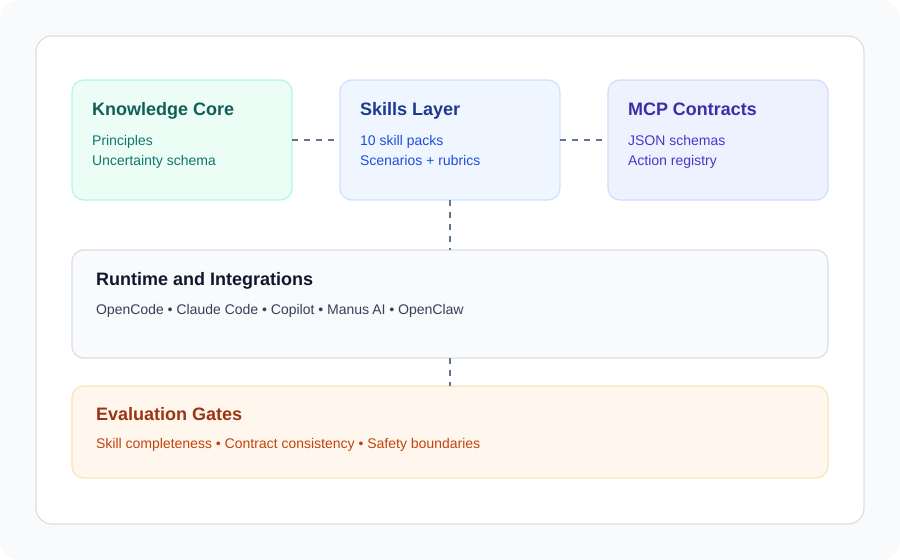

🛡️ Supportive Reply
Detects crisis signals, generates supportive responses with escalation guidance.
Emotional SafetyHumanity4AI Windows · macOS · Linux · Android · iOS
Crisis detection, WCAG audits, empathy, cultural sensitivity, and more — open skill packs with explicit safety boundaries for OpenCode, Claude Code, Copilot, Manus AI, and beyond.

Detects crisis signals, generates supportive responses with escalation guidance.
Emotional SafetyAudits and rewrites text to remove harmful, stigmatising, or triggering patterns.
Emotional SafetyScores pages against all 86 WCAG 2.2 success criteria (A/AA/AAA).
AccessibilityAudits content for reading level, structure, and cognitive load.
Cognitive SupportFlags cultural sensitivity issues for a given audience and region.
Cultural ContextGenerates structured de-escalation plans calibrated to conflict intensity.
Conflict NavigationReframes messages with genuine empathy, catching hollow empathy patterns.
CommunicationAudits UIs for ADHD, autism, dyslexia, and sensory sensitivity.
NeurodiversityAudits user flows for age barriers across children, adults, and older users.
Age InclusionOne command to clone, install, verify, and start:
git clone https://github.com/humanity4ai/project_human.git && cd project_human && pnpm install && pnpm check && pnpm evals && pnpm startOr use the npm package directly:
npx @humanity4ai/mcp-serversConfigure your agent by adding this to your MCP client config:
{
"mcpServers": {
"humanity4ai": {
"command": "pnpm",
"args": ["--filter", "@humanity4ai/mcp-servers", "start"],
"cwd": "/path/to/project_human"
}
}
}All 9 skills are now available via tools/list and tools/call.
Docker: docker compose up | Prerequisites: Node.js ≥ 22, pnpm ≥ 10
AI agents are everywhere — but they're not always humane. Humanity4AI gives agents reusable, tested skills for the moments that matter: detecting a user in crisis, auditing content for accessibility, catching harmful language patterns, and more. Every skill includes explicit safety boundaries, uncertainty disclosure, and evaluation gates.
Pick a starter task and open a PR in under 10 minutes.